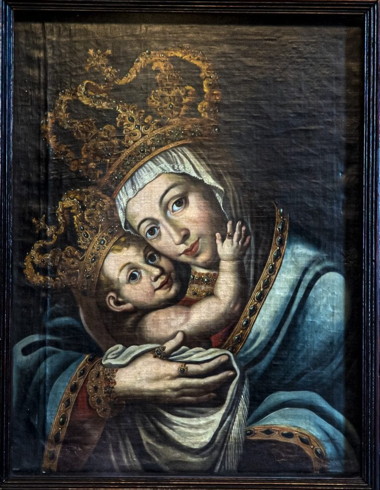
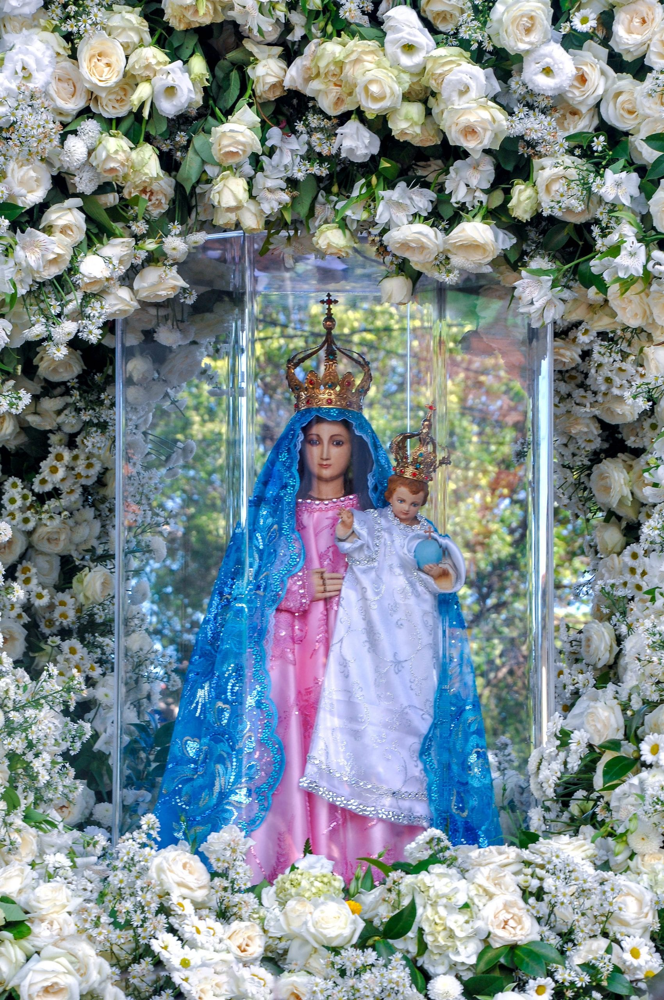
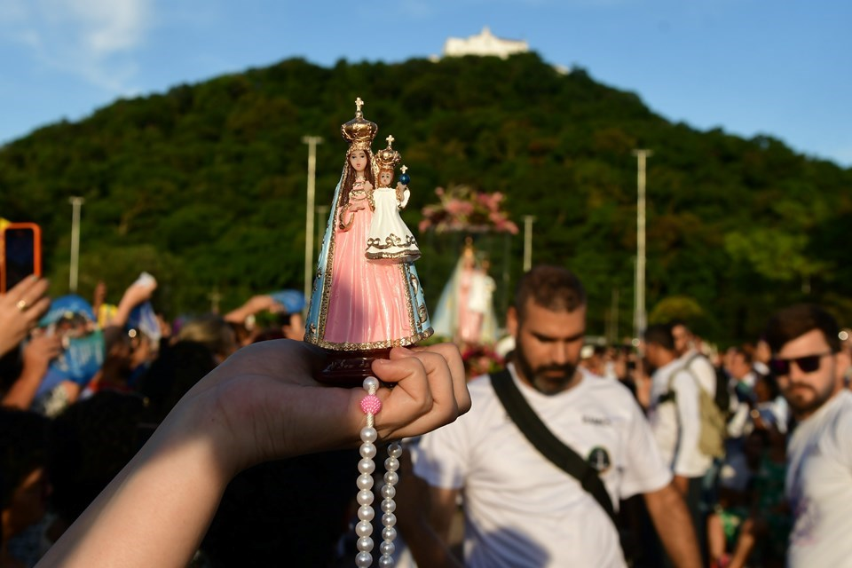
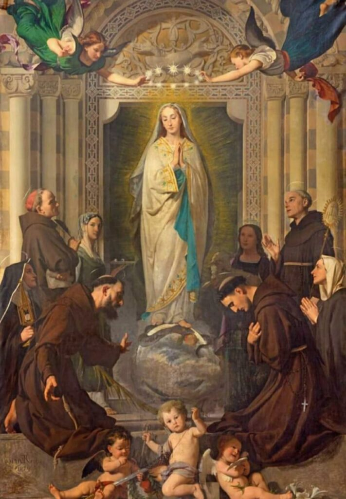
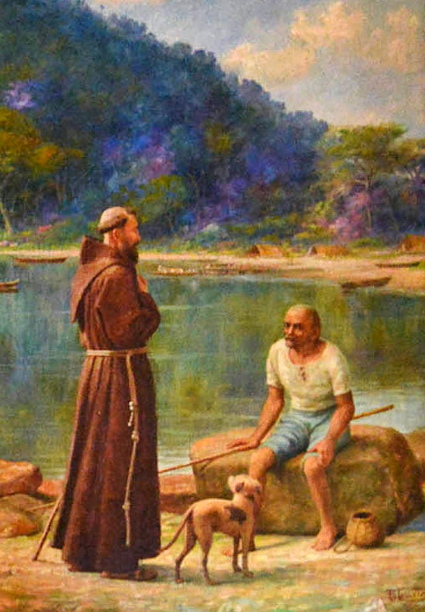

Com Maria , peregrinos de esperança

Nossa Senhora da Penha
Padroeira do Espírito Santo

A Festa da Penha - Um Legado de Fé e Cultura no Espírito Santo
A Festa da Penha é uma das mais antigas e grandiosas manifestações religiosas do Brasil, celebrada anualmente no estado do Espírito Santo, especificamente em Vila Velha. Dedicada a Nossa Senhora da Penha, a padroeira do Estado, a festa possui uma data móvel, ocorrendo tradicionalmente em abril, oito dias após o Domingo de Páscoa.
Revestida de Significados
O Menino Jesus no colo de Nossa Senhora da Penha é a razão pela qual a Virgem Maria é Senhora, rainha e mãe da humanidade. Ele é seu Filho e, ao mesmo tempo, Criador. A imagem do Menino Jesus também carrega símbolos importantes como o cetro na mão direita do Menino Jesus, afirmando que Ele é o Rei. Já o globo na mão esquerda do Menino Jesus nos recorda que é Ele quem sustenta o mundo e quem o mantém. A cruz sobre o globo terrestre nos fala que foi através dela que Jesus salvou toda a humanidade.
Conheça Mais Sobre a Historia de Nossa Senhora da Penha !

As Romarias da Festa da Penha: Caminhos de Devoção e Comunidade
As romarias são procissões de fiéis que percorrem diferentes trajetos em devoção a Nossa Senhora da Penha, culminando geralmente no Convento ou no Parque da Prainha. Elas representam uma das manifestações mais visíveis e participativas da fé capixaba, unindo a comunidade em um ato de peregrinação e oração.
Conheça Mais Sobre as Romarias !

As Sete Alegrias de Nossa Senhora
As Sete Alegrias de Nossa Senhora são momentos de júbilo na vida da Virgem Maria, conforme a tradição católica. Cada alegria é acompanhada por uma passagem bíblica e uma breve oração
Reze agora mesmo as Sete Alegrias ! !

Frei Pedro Palácios: O Eremita Fundador e a Gênese da Devoção